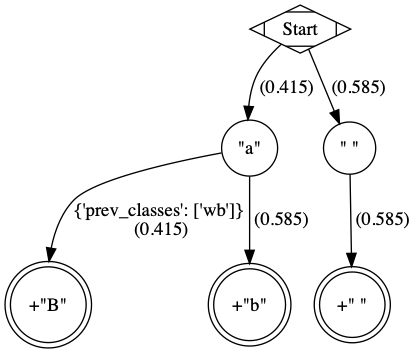

Usage
To use Graph Transliterator in a project:
1from graphtransliterator import GraphTransliterator
Overview
Graph Transliterator requires that you first configure a GraphTransliterator.
Then you can transliterate an input string using transliterate(). There are a few
additional methods that can be used to extract information for specific use cases, such
as details about which rules were matched.
Configuration
Graph Transliterator takes the following parameters:
The acceptable types of tokens in the input string as well as any associated token classes.
The transliteration rules for the transformation of the input string.
Rules for dealing with whitespace.
“On match” rules for strings to be inserted in particular contexts right before a transliteration rule’s output is added (optional).
Metadata settings for the transliterator (optional).
Initialization
Defining the rules for transliteration can be difficult, especially when dealing with
complex scripts. That is why Graph Transliterator uses an “easy reading” format that
allows you to enter the transliteration rules in the popular YAML
format, either from a string (using from_yaml()) or by reading
from a file or stream (GraphTransliterator.from_yaml_file()). You can also
initialize from the loaded contents of YAML
(GraphTransliterator.from_easyreading_dict()).
Here is a quick sample that parameterizes GraphTransliterator using an easy
reading YAML string (with comments):
2yaml_ = """
3 tokens:
4 a: [vowel] # type of token ("a") and its class (vowel)
5 bb: [consonant, b_class] # type of token ("bb") and its classes (consonant, b_class)
6 ' ': [wb] # type of token (" ") and its class ("wb", for wordbreak)
7 rules:
8 a: A # transliterate "a" to "A"
9 bb: B # transliterate "bb" to "B"
10 a a: <2AS> # transliterate ("a", "a") to "<2AS>"
11 ' ': ' ' # transliterate ' ' to ' '
12 whitespace:
13 default: " " # default whitespace token
14 consolidate: false # whitespace should not be consolidated
15 token_class: wb # whitespace token class
16"""
17gt_one = GraphTransliterator.from_yaml(yaml_)
18gt_one.transliterate('a')
'A'
19gt_one.transliterate('bb')
'B'
20gt_one.transliterate('aabb')
'<2AS>B'
The example above shows a very simple transliterator that replaces the input token “a” with “A”, “bb” with “B”, ” ” with ” “, and two “a” in a row with “<2AS>”. It does not consolidate whitespace, and treats ” ” as its default whitespace token. Tokens contain strings of one or more characters.
Input Tokens and Token Class Settings
During transliteration, Graph Transliterator first attempts to convert the input string
into a list of tokens. This is done internally using
GraphTransliterator.tokenize():
21gt_one.tokenize('abba')
[' ', 'a', 'bb', 'a', ' ']
Note that the default whitespace token is added to the start and end of the input tokens.
Tokens can be more than one character, and longer tokens are matched first:
22yaml_ = """
23 tokens:
24 a: [] # "a" token with no classes
25 aa: [] # "aa" token with no classes
26 ' ': [wb] # " " token and its class ("wb", for wordbreak)
27 rules:
28 aa: <DOUBLE_A> # transliterate "aa" to "<DOUBLE_A>"
29 a: <SINGLE_A> # transliterate "a" to "<SINGLE_A>"
30 whitespace:
31 default: " " # default whitespace token
32 consolidate: false # whitespace should not be consolidated
33 token_class: wb # whitespace token class
34"""
35gt_two = GraphTransliterator.from_yaml(yaml_)
36gt_two.transliterate('a')
'<SINGLE_A>'
37gt_two.transliterate('aa')
'<DOUBLE_A>'
38gt_two.transliterate('aaa')
'<DOUBLE_A><SINGLE_A>'
Here the input “aaa” is transliterated as “<DOUBLE_A><SINGLE_A>”, as the longer token “aa” is matched before “a”.
Tokens can be assigned zero or more classes. Each class is a string of your choice.
These classes are used in transliteration rules. In YAML they are defined as a
dictionary, but internally the rules are stored as a dictionary of token strings keyed
to a set of token classes. They can be accessed using
GraphTransliterator.tokens:
39gt_two.tokens
{'a': set(), 'aa': set(), ' ': {'wb'}}
Transliteration Rules
Graph Transliterator can handle a variety of transliteration tasks. To do so, it uses transliteration rules that contain match settings for particular tokens in specific contexts and also a resulting production, or string to be appended to the output string.
Match Settings
Transliteration rules contain the following parameters (ordered by where they would appear in a list of tokens):
previous token classes : a list of token classes (optional)
previous tokens : a list of tokens (optional)
tokens : a list of tokens
next tokens : a list of tokens (optional)
next token classes : a list of token classes (optional)
One or more (tokens) must be matched in a particular location. However, specific tokens can be required before (previous tokens) or behind (next tokens) those tokens. Additionally, particular token classes can be required before (previous token classes) and behind (next token classes) all of the specific tokens required (previous tokens, tokens, next tokens).
Depending on their complexity, these match conditions can be entered using the “easy reading” format in the following ways.
If there are no required lookahead or lookbehind tokens, the rule can be as follows:
rules:
a a: aa # two tokens (a,a), with production "production_aa"
If, in an addition to tokens, there are specific previous or following tokens that must be matched, the rule can be entered as:
tokens:
a: []
b: []
c: []
d: []
rules:
a (b): a_before_b # matches token 'a' with the next token 'b'
(c) a: a_after_c # matches token 'a' when the previous token is 'c'
a (b c): a_before_b_and_c # matches token 'a' when next tokens are 'b' then 'c'
(d) a (b c): a_after_d_and_before_b,c # matches the token 'a' after 'd' and before 'b' and 'c'
Token class names are indicated between angular brackets (“<classname>”). If preceding and following tokens are not required but classes are, these can be entered as follows:
tokens:
a: []
b: [class_b]
c: []
' ': [wb]
rules:
c <class_b>: c_after _class_b # match token 'c' before a token of class 'class_b`
<class_b> a: a_before_class_b # match token 'a' after a token of class `class_b`
<class_b> a <class_b>: a_between_class_b # match token 'a' between tokens of class 'class_b'
If token classes must precede or follow specific tokens, these can be entered as:
tokens:
a: []
b: []
c: [class_c]
d: [class_d]
' ': [wb]
rules:
d (b <class_c>): a_before_b_and_class_c # match token 'd' before 'b' and a token of class 'class_c'
(<class_c> b) a: a_after_b_and_class_c # match token 'a' after 'b' and a token of class 'class_c'
(<class_c> d) a (b <class_c> <class_d>): x # match 'a' after token of 'class_c' and 'd' and before a token of 'class_c' and of 'class_d'
whitespace:
default: ' '
token_class: wb
consolidate: false
Automatic Ordering of Transliteration Rules
Graph Transliterator automatically orders the transliteration rules based on the number of tokens required by the rule. It picks the rule requiring the longest match in a given context. It does so by assigning a cost to each transliteration rule that decreases depending on the number of tokens required by the rule. More tokens decreases the cost of a rule causing it to be matched first:
40yaml_ = """
41 tokens:
42 a: []
43 b: []
44 c: [class_of_c]
45 ' ': [wb]
46 rules:
47 a: <<A>>
48 a b: <<AB>>
49 b: <<B>>
50 c: <<C>>
51 ' ': _
52 <class_of_c> a b: <<AB_after_C>>
53 whitespace:
54 default: " "
55 consolidate: false
56 token_class: wb
57"""
58gt_three = GraphTransliterator.from_yaml(yaml_)
59gt_three.transliterate("ab") # should match rule "a b"
'<<AB>>'
60gt_three.transliterate("cab") # should match rules: "c", and "<class_of_c> a b"
'<<C>><<AB_after_C>>'
Internally, Graph Transliterator uses a special TransliterationRule class.
These can be accessed using GraphTransliterator.rules. Rules are sorted by cost,
lowest to highest:
61gt_three.rules
[TransliterationRule(production='<<AB_after_C>>', prev_classes=['class_of_c'], prev_tokens=None, tokens=['a', 'b'], next_tokens=None, next_classes=None, cost=0.32192809488736235),
TransliterationRule(production='<<AB>>', prev_classes=None, prev_tokens=None, tokens=['a', 'b'], next_tokens=None, next_classes=None, cost=0.41503749927884376),
TransliterationRule(production='<<A>>', prev_classes=None, prev_tokens=None, tokens=['a'], next_tokens=None, next_classes=None, cost=0.5849625007211562),
TransliterationRule(production='<<B>>', prev_classes=None, prev_tokens=None, tokens=['b'], next_tokens=None, next_classes=None, cost=0.5849625007211562),
TransliterationRule(production='<<C>>', prev_classes=None, prev_tokens=None, tokens=['c'], next_tokens=None, next_classes=None, cost=0.5849625007211562),
TransliterationRule(production='_', prev_classes=None, prev_tokens=None, tokens=[' '], next_tokens=None, next_classes=None, cost=0.5849625007211562)]
Whitespace Settings
Whitespace is often very important in transliteration tasks, as the form of many letters may change at the start or end of words, as in the right-to-left Perso-Arabic and left-to-right Indic scripts. Therefore, Graph Transliterator requires the following whitespace settings:
the default whitespace token
the whitespace token class
whether or not to consolidate whitespace
A whitespace token and token class must be defined for any Graph Transliterator. A whitespace character is added temporarily to the start and end of the input tokens during the transliteration process.
The consolidate option may be useful in particular transliteration tasks. It
replaces any sequential whitespace tokens in the input string with the default
whitespace character. At the start and end of input, it removes any whitespace:
62yaml_ = """
63 tokens:
64 a: []
65 ' ': [wb]
66 rules:
67 <wb> a: _A
68 a <wb>: A_
69 <wb> a <wb>: _A_
70 a: a
71 ' ': ' '
72 whitespace:
73 default: " " # default whitespace token
74 consolidate: true # whitespace should be consolidated
75 token_class: wb # whitespace token class
76"""
77gt = GraphTransliterator.from_yaml(yaml_)
78gt.transliterate('a') # whitespace present at start of string
'_A_'
79gt.transliterate('aa') # whitespace present at start and end of string
'_AA_'
80gt.transliterate(' a') # consolidate removes whitespace at start of string
'_A_'
81gt.transliterate('a ') # consolidate removes whitespace at end of string
'_A_'
Whitespace settings are stored internally as WhitespaceRules and can be
accessed using GraphTransliterator.whitespace:
82gt.whitespace
WhitespaceRules(default=' ', token_class='wb', consolidate=True)
On Match Rules
Graph Transliterator allows strings to be inserted right before the productions of transliteration rules. These take as parameters:
a list of previous token classes, preceding the location of the transliteration rule match
a list of next token classes, from the index of the transliteration rule match
a production string to insert
In the easy reading YAML format, the onmatch_rules are a list of dictionaries.
The key consists of the token class names in angular brackets (“<classname>”), and the
previous classes to match are separated from the following classes by a “+”. The
production is the value of the dictionary:
83yaml_ = """
84 tokens:
85 a: [vowel]
86 ' ': [wb]
87 rules:
88 a: A
89 ' ': ' '
90 whitespace:
91 default: " "
92 consolidate: false
93 token_class: wb
94 onmatch_rules:
95 - <vowel> + <vowel>: ',' # add a comma between vowels
96 """
97gt = GraphTransliterator.from_yaml(yaml_)
98gt.transliterate('aa')
'A,A'
On Match rules are stored internally as a OnMatchRule and can be accessed using
GraphTransliterator.onmatch_rules:
99gt.onmatch_rules
[OnMatchRule(prev_classes=['vowel'], next_classes=['vowel'], production=',')]
Metadata
Graph Transliterator allows for the storage of metadata as another input parameter,
metadata. It is a dictionary, and fields can be added to it:
100yaml_ = """
101 tokens:
102 a: []
103 ' ': [wb]
104 rules:
105 a: A
106 ' ': ' '
107 whitespace:
108 default: " "
109 consolidate: false
110 token_class: wb
111 metadata:
112 author: Author McAuthorson
113 version: 0.1.1
114 description: A sample Graph Transliterator
115 """
116gt = GraphTransliterator.from_yaml(yaml_)
117gt.metadata
{'author': 'Author McAuthorson',
'version': '0.1.1',
'description': 'A sample Graph Transliterator'}
Unicode Support
Graph Transliterator allows Unicode characters to be specified by name, including in YAML files, using the format “\N{UNICODE CHARACTER NAME}” or “\u{####}” (where #### is the hexadecimal character code):
118yaml_ = """
119 tokens:
120 b: []
121 c: []
122 ' ': [wb]
123 rules:
124 b: \N{LATIN CAPITAL LETTER B}
125 c: \u0043 # hexadecimal Unicode character code for 'C'
126 ' ': ' '
127 whitespace:
128 default: " "
129 consolidate: false
130 token_class: wb
131 """
132gt = GraphTransliterator.from_yaml(yaml_)
133gt.transliterate('b')
'B'
134gt.transliterate('c')
'C'
Configuring Directly
In addition to using GraphTansliterator.from_yaml() and
GraphTransliterator.from_yaml_file(), Graph Transliterator can also be configured
and initialized directly using basic Python types passed as dictionary to
GraphTransliterator.from_dict()
135settings = {
136 'tokens': {'a': ['vowel'],
137 ' ': ['wb']},
138 'rules': [
139 {'production': 'A', 'tokens': ['a']},
140 {'production': ' ', 'tokens': [' ']}],
141 'onmatch_rules': [
142 {'prev_classes': ['vowel'],
143 'next_classes': ['vowel'],
144 'production': ','}],
145 'whitespace': {
146 'default': ' ',
147 'consolidate': False,
148 'token_class': 'wb'},
149 'metadata': {
150 'author': 'Author McAuthorson'}
151}
152gt = GraphTransliterator.from_dict(settings)
153gt.transliterate('a')
'A'
This feature can be useful if generating a Graph Transliterator using code as opposed to a configuration file.
Ambiguity Checking
Graph Transliterator, by default, will check for ambiguity in its transliteration rules.
If two rules of the same cost would match the same string(s) and those strings would not
be matched by a less costly rule, an AmbiguousTransliterationRulesException
occurs. Details of all exceptions will be reported as a logging.warning():
155yaml_ = """
156tokens:
157 a: [class1, class2]
158 b: []
159 ' ': [wb]
160rules:
161 <class1> a: A
162 <class2> a: AA # ambiguous rule
163 <class1> b: BB
164 b <class2>: BB # also ambiguous
165whitespace:
166 default: ' '
167 consolidate: True
168 token_class: wb
169"""
170gt = GraphTransliterator.from_yaml(yaml_)
WARNING:root:The pattern [{'a'}, {'a'}, {'a', 'b', ' '}] can be matched by both:
<class1> a
<class2> a
WARNING:root:The pattern [{'a'}, {'b'}, {'a'}] can be matched by both:
<class1> b
b <class2>
AmbiguousTransliterationRulesException
The warning shows the set of possible previous tokens, matched tokens, and next tokens as three sets.
Ambiguity checking is only necessary when using an untested Graph Transliterator. It can
be turned off during initialization. To do so, set the initialization parameter
check_ambiguity to False.
Ambiguity checking can also be done on demand using check_for_ambiguity().
Ambiguity checking is not performed if loading from a serialized GraphTransliterator
using GraphTransliterator.load() or GraphTransliterator.loads().
Setup Validation
Graph Transliterator validates both the “easy reading” configuration and the direct
configuration using the marshmallow library.
Transliteration and Its Exceptions
The main method of Graph Transliterator is
GraphTransliterator.transliterate(). It will return a string:
171GraphTransliterator.from_yaml(
172'''
173tokens:
174 a: []
175 ' ': [wb]
176rules:
177 a: A
178 ' ': '_'
179whitespace:
180 default: ' '
181 consolidate: True
182 token_class: wb
183''').transliterate("a a")
'A_A'
Details of transliteration error exceptions will be logged using
logging.warning().
Unrecognizable Input Token
Unless the GraphTransliterator is initialized with or has the property
ignore_errors set as True, GraphTransliterator.transliterate() will
raise UnrecognizableInputTokenException when character(s) in the input string do
not correspond to any defined types of input tokens. In both cases, there will be a
logging.warning():
184from graphtransliterator import GraphTransliterator
185yaml_ = """
186 tokens:
187 a: []
188 ' ': [wb]
189 rules:
190 a: A
191 ' ': ' '
192 whitespace:
193 default: " "
194 consolidate: true
195 token_class: wb
196"""
197GraphTransliterator.from_yaml(yaml_).transliterate("a!a") # ignore_errors=False
WARNING:graphtransliterator:Unrecognizable token ! at pos 1 of a!a
UnrecognizableInputTokenException
198GraphTransliterator.from_yaml(yaml_, ignore_errors=True).transliterate("a!a") # ignore_errors=True
WARNING:graphtransliterator:Unrecognizable token ! at pos 1 of a!a
'AA'
No Matching Transliteration Rule
Another possible error occurs when no transliteration rule can be identified at a
particular index in the index string. In that case, there will be a
logging.warning(). If the parameter ignore_errors is set to True,
the token index will be advanced. Otherwise, there will be a
NoMatchingTransliterationRuleException:
199yaml_='''
200 tokens:
201 a: []
202 b: []
203 ' ': [wb]
204 rules:
205 a: A
206 b (a): B
207 whitespace:
208 default: ' '
209 token_class: wb
210 consolidate: False
211'''
212gt = GraphTransliterator.from_yaml(yaml_)
213gt.transliterate("ab")
WARNING:graphtransliterator:No matching transliteration rule at token pos 2 of [' ', 'a', 'b', ' ']
NoMatchingTransliterationRuleException
214gt.ignore_errors = True
215gt.transliterate("ab")
WARNING:graphtransliterator:No matching transliteration rule at token pos 2 of [' ', 'a', 'b', ' ']
'A'
Transliterating with Details
It is also possible to get details about a transliteration by running transliterate_with_details():
216GraphTransliterator.from_yaml(
217'''
218tokens:
219 a: []
220 ' ': [wb]
221rules:
222 a: A
223 ' ': '_'
224whitespace:
225 default: ' '
226 consolidate: True
227 token_class: wb
228''').transliterate_with_details("a a")
('A_A',
[TransliterationRule(production='A', prev_classes=None, prev_tokens=None, tokens=['a'], next_tokens=None, next_classes=None, cost=0.5849625007211562),
TransliterationRule(production='_', prev_classes=None, prev_tokens=None, tokens=[' '], next_tokens=None, next_classes=None, cost=0.5849625007211562),
TransliterationRule(production='A', prev_classes=None, prev_tokens=None, tokens=['a'], next_tokens=None, next_classes=None, cost=0.5849625007211562)])
That returns a tuple of the transliteration output and a list of TransliterationRule.
Additional Methods
Graph Transliterator also offers a few additional methods that may be useful for particular tasks.
Serialization and Deserialization
The settings of a Graph Transliterator can be serialized using
GraphTransliterator.dump(), which returns a dictionary of native Python data
types. A JSON string of the same can be accessed using
GraphTransliterator.dumps(). Validation is not performed during a dump.
By default, GraphTransliterator.dumps() will use compression level 2, which
removes the internal graph and indexes tokens and graph node labels. Compression level 1
also indexes tokens and graph node labels and contains the graph. Compression level 0
is human readable and includes the graph. No information is lost during compression.
Level 2, the default, loads the fastest and also has the smallest file size.
A GraphTransliterator can be loaded from serialized settings, e.g. in an API context,
using GraphTransliterator.load() and from JSON data as
GraphTransliterator.loads(). Because they are intended to be quick, neither method
performs ambiguity checks or strict validation checking by default.
Serialization can be useful if providing an API or making the configured Graph Transliterator available in other programming languages, e.g. Javascript.
Matching at an Index
The method match_at() is also public. It matches the best transliteration rule at
a particular index, which is the rule that contains the largest number of required
tokens. The method also has the option match_all which, if set, returns all
possible transliteration matches at a particular location:
229gt = GraphTransliterator.from_yaml('''
230 tokens:
231 a: []
232 a a: []
233 ' ': [wb]
234 rules:
235 a: <A>
236 a a: <AA>
237 whitespace:
238 default: ' '
239 consolidate: True
240 token_class: wb
241''')
242tokens = gt.tokenize("aa")
243tokens # whitespace added to ends
[' ', 'a', 'a', ' ']
244gt.match_at(1, tokens) # returns index to rule
0
245gt.rules[gt.match_at(1, tokens)] # actual rule
TransliterationRule(production='<AA>', prev_classes=None, prev_tokens=None, tokens=['a', 'a'], next_tokens=None, next_classes=None, cost=0.41503749927884376)
246gt.match_at(1, tokens, match_all=True) # index to rules, with match_all
[0, 1]
247[gt.rules[_] for _ in gt.match_at(1, tokens, match_all=True)] # actual rules, with match_all
[TransliterationRule(production='<AA>', prev_classes=None, prev_tokens=None, tokens=['a', 'a'], next_tokens=None, next_classes=None, cost=0.41503749927884376),
TransliterationRule(production='<A>', prev_classes=None, prev_tokens=None, tokens=['a'], next_tokens=None, next_classes=None, cost=0.5849625007211562)]
Details of Matches
Each Graph Transliterator has a property last_matched_rules which returns a list
of TransliterationRule of the previously matched transliteration rules:
248gt.transliterate("aaa")
'<AA><A>'
249gt.last_matched_rules
[TransliterationRule(production='<AA>', prev_classes=None, prev_tokens=None, tokens=['a', 'a'], next_tokens=None, next_classes=None, cost=0.41503749927884376),
TransliterationRule(production='<A>', prev_classes=None, prev_tokens=None, tokens=['a'], next_tokens=None, next_classes=None, cost=0.5849625007211562)]
The particular tokens matched by those rules can be accessed using
last_matched_rule_tokens:
250gt.last_matched_rule_tokens
[['a', 'a'], ['a']]
Pruning of Rules
In particular cases, it may be useful to remove certain transliteration rules from a
more robustly defined Graph Transliterator based on the string output produced by the
rules. That can be done using pruned_of():
251gt.rules
[TransliterationRule(production='<AA>', prev_classes=None, prev_tokens=None, tokens=['a', 'a'], next_tokens=None, next_classes=None, cost=0.41503749927884376),
TransliterationRule(production='<A>', prev_classes=None, prev_tokens=None, tokens=['a'], next_tokens=None, next_classes=None, cost=0.5849625007211562)]
252gt.pruned_of('<AA>').rules
[TransliterationRule(production='<A>', prev_classes=None, prev_tokens=None, tokens=['a'], next_tokens=None, next_classes=None, cost=0.5849625007211562)]
253gt.pruned_of(['<A>', '<AA>']).rules
[]
Internal Graph
Graph Transliterator creates a directed tree during its initialization. During calls to
transliterate(), it searches that graph to find the best transliteration match at
a particular index in the tokens of the input string.
DirectedGraph
The tree is an instance of DirectedGraph that can be accessed using
GraphTransliterator.graph. It contains: a list of nodes, each consisting of a
dictionary of attributes; a dictionary of edges keyed between the head and tail of an
edge that contains a dictionary of edge attributes; and finally an edge list.
254gt = GraphTransliterator.from_yaml(
255 """
256 tokens:
257 a: []
258 ' ': [wb]
259 rules:
260 a: b
261 <wb> a: B
262 ' ': ' '
263 whitespace:
264 token_class: wb
265 default: ' '
266 consolidate: false
267 """)
268gt.graph
<graphtransliterator.graphs.DirectedGraph at 0x1087022f0>
Nodes
The tree has nodes of three types: Start, token, and rule. A single Start node, the root, is connected to all other nodes. A token node corresponds to a token having been matched. Finally, rule nodes are leaf nodes (with no outgoing edges) that correspond to matched transliteration rules:
269gt.graph.node
[{'type': 'Start', 'ordered_children': {'a': [1], ' ': [4]}},
{'type': 'token', 'token': 'a', 'ordered_children': {'__rules__': [2, 3]}},
{'type': 'rule', 'rule_key': 0, 'accepting': True, 'ordered_children': {}},
{'type': 'rule', 'rule_key': 1, 'accepting': True, 'ordered_children': {}},
{'type': 'token', 'token': ' ', 'ordered_children': {'__rules__': [5]}},
{'type': 'rule', 'rule_key': 2, 'accepting': True, 'ordered_children': {}}]
Edges
Edges between these nodes may have different constraints in their attributes:
270gt.graph.edge
{0: {1: {'token': 'a', 'cost': 0.41503749927884376},
4: {'token': ' ', 'cost': 0.5849625007211562}},
1: {2: {'cost': 0.41503749927884376, 'constraints': {'prev_classes': ['wb']}},
3: {'cost': 0.5849625007211562}},
4: {5: {'cost': 0.5849625007211562}}}
Before the token nodes, there is a token constraint on the edge that must be matched before the transliterator can visit the token node:
271gt.graph.edge[0][1]
{'token': 'a', 'cost': 0.41503749927884376}
On the edges before rules there may be other constraints, such as certain tokens preceding or following tokens of the corresponding transliteration rule:
272gt.graph.edge[1][2]
{'cost': 0.41503749927884376, 'constraints': {'prev_classes': ['wb']}}
An edge list is also maintained that consists of a tuple of (head, tail):
273gt.graph.edge_list
[(0, 1), (0, 4), (1, 2), (1, 3), (4, 5)]
Search and Preprocessing
Graph Transliterator uses a best-first search, implemented using a stack, that finds the transliteration with the the lowest cost. The cost function is:
It results in a number between 1 and 0 that lessens as more tokens must be matched. Each edge on the graph has a cost attribute that is set to the lowest cost transliteration rule following it. When transliterating, Graph Transliterator will try lower cost edges first and will backtrack if the constraint conditions are not met.

An example graph created for the simple case of a Graph Transliterator that takes as
input two token types, a and " " (space), and renders " " as " ", and
a as b unless it follows a token of class wb (for wordbreak), in which
case it renders a as B. The rule nodes are in double circles, and token
nodes are single circles. The numbers are the cost of the particular edge, and less
costly edges are searched first. Previous token class (prev_classes) constraints
are found on the edge before the leftmost leaf rule node.
To optimize the search, during initialization an ordered_children dictionary is
added to each non-leaf node. Its values are a list of node indexes sorted by cost
and keyed by the following token:
274gt.graph.node[0]
{'type': 'Start', 'ordered_children': {'a': [1], ' ': [4]}}
Any rule connected to a node is added to each ordered_children. Any rule nodes
immediately following the current node are keyed to __rules__:
275gt.graph.node[1]
{'type': 'token', 'token': 'a', 'ordered_children': {'__rules__': [2, 3]}}
Because of this preprocessing, Graph Transliterator does not need to iterate through all of the outgoing edges of a node to find the next node to search.